DOSSIÊS INDIVIDUAIS // EQUIPE, FAMÍLIA E VÍNCULOS
NINGUÉM
SEGUE SÓ.
Os Hellsings são feitos de quem escolheu ficar ao lado deles. Cada arquivo acompanha uma vida por seus próprios períodos, das lembranças anteriores ao Dia D aos registros do presente.
PESSOAS E VÍNCULOS // ARQUIVO GERAL
Pessoas que
fazem parte.
Os retratos seguem a época a que pertencem. Quando o arquivo ainda não tem imagens de um período, o registro informa sem misturar fotos de outras fases.
Carregando arquivos...
Fichas com o selo PROPOSTA DE LORE continuam em desenvolvimento e podem ser revisadas.
ARQUIVOS PESSOAIS // PESSOAS E VÍNCULOS
Vidas ligadas ao comboio
12 REGISTROS
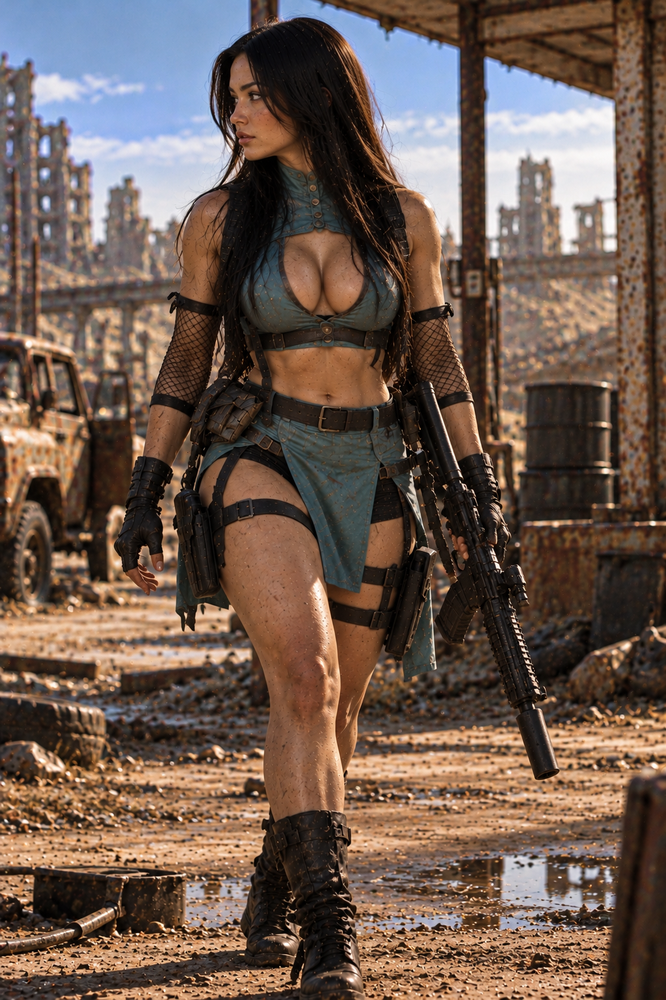
Lana
Whitmore.
Aprendeu a manter abrigos em contato quando as redes caíram. Esposa de Nathan Salvatore Connor e parte do comboio Hellsing.
Sally
Ward.
Sonhava vestir um distintivo. Depois do Dia D, um encontro com Nicolai mudou o rumo de duas vidas.
Hilary
Caldwell Ashford.
Depois de encontrar nos Connor um lugar seguro, Hilary transformou a experiência em cuidado para quem ainda espera por ajuda.
Sophie
Romanoff.
Esposa de Alucard Myers Connor. Seu dossiê preserva os registros próprios de Sophie, enquanto as imagens do casal ficam no arquivo de vínculos.

Leona
Foi treinada para observar e reagir. Hoje usa essa formação para explorar edifícios, abrir rotas de saída e proteger a equipe sem avançar às cegas.
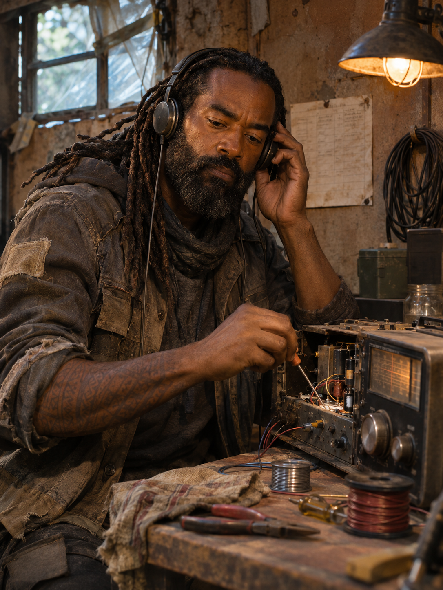
Darius
Bennett.
Marido de Chloe. Sua história em desenvolvimento o apresenta como técnico de rádio, dedicado a manter os abrigos conectados.

Micah
Bennett.
Filho de Chloe e Darius. Na proposta atual, leva recados entre abrigos e registra quem partiu e conseguiu voltar.
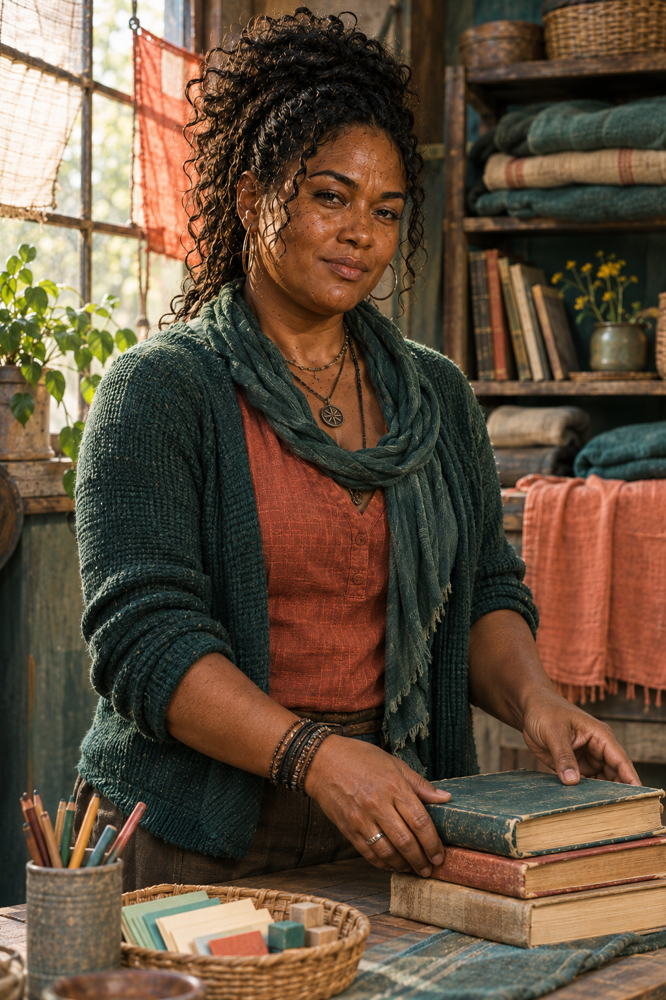
Imani
Carver.
Esposa de Luke e mãe de Asha e Nyla. O perfil em desenvolvimento a apresenta como educadora e organizadora da vida nos abrigos.
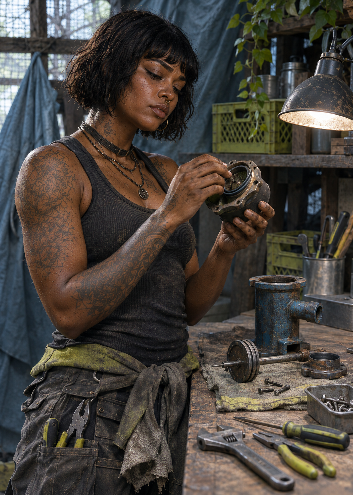
Asha
Carver.
Filha de Luke e Imani. Na proposta atual, recupera ferramentas e equipamentos para que uma missão tenha sempre outra saída.
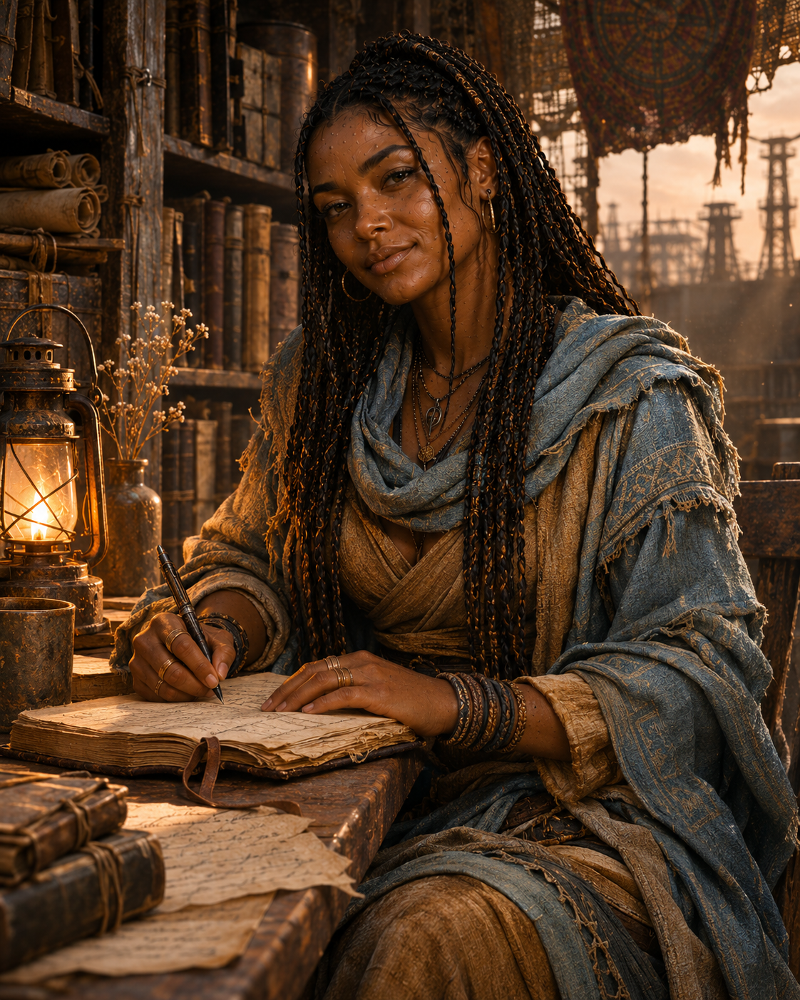
Nyla
Carver.
Filha de Luke e Imani. Seu arquivo a descreve guardando histórias e nomes da comunidade em cadernos protegidos.
Amélia Winchester
Viúva de John e mãe de Henry, Samuel e Olivia. As imagens preservadas ao lado dele são anteriores à morte de John.
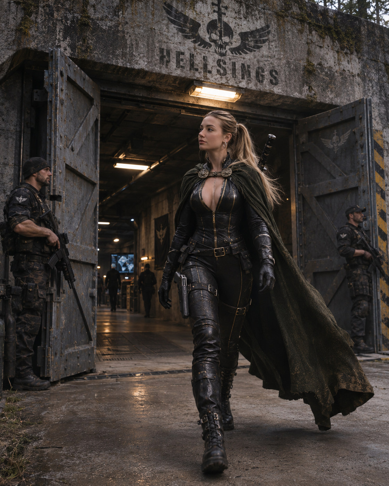
Kelly
Sullivan.
Sobreviveu por anos ao lado da comunidade que sua família ajudou a fundar. Depois do ataque da Dominus, escolheu seguir com os Hellsings.
NOVOS CODINOMES // FUNÇÕES DE CAMPO
Novas funções de campo
16 REGISTROS
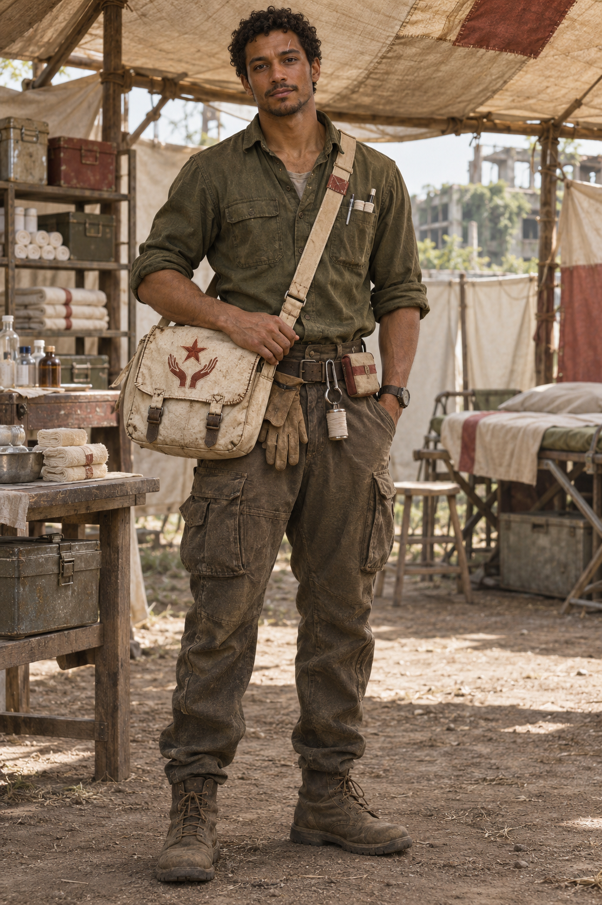
Sutura
Quando alguém cai, Sutura fica ao lado até que os dois encontrem uma saída.
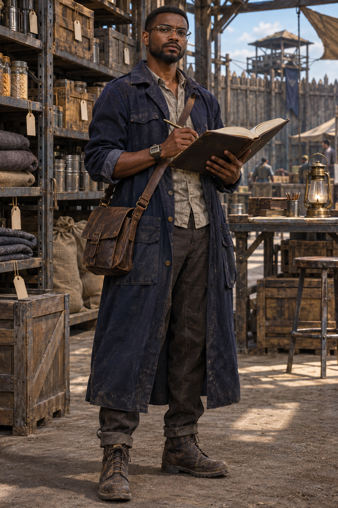
Lacre
Lacre registra cada caixa porque sabe que confiança também precisa de organização.
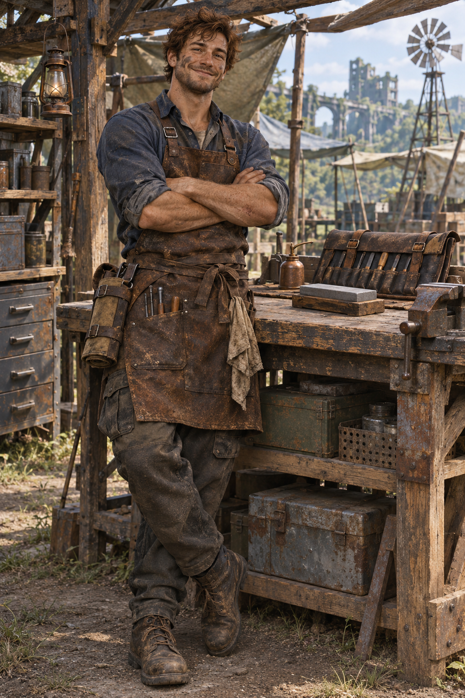
Afiador
Afiador não inventa uma saída nova; ele faz a ferramenta que existe continuar funcionando.
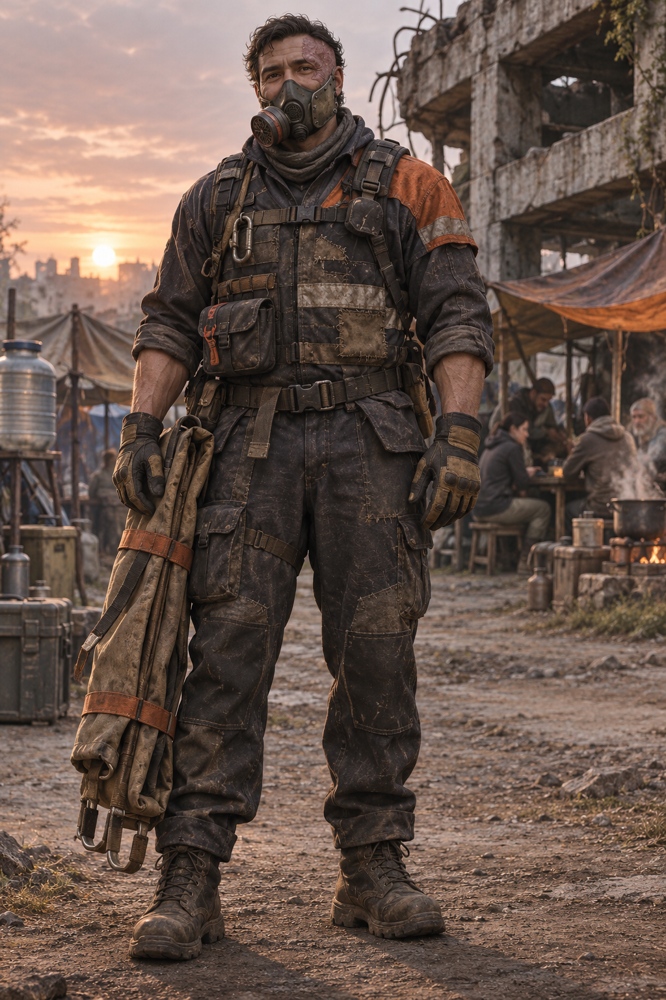
Bastião
Bastião é a presença que mantém a retaguarda unida. A máscara assimétrica reaproveita equipamento de resgate e protege as marcas que ficaram em parte do rosto.
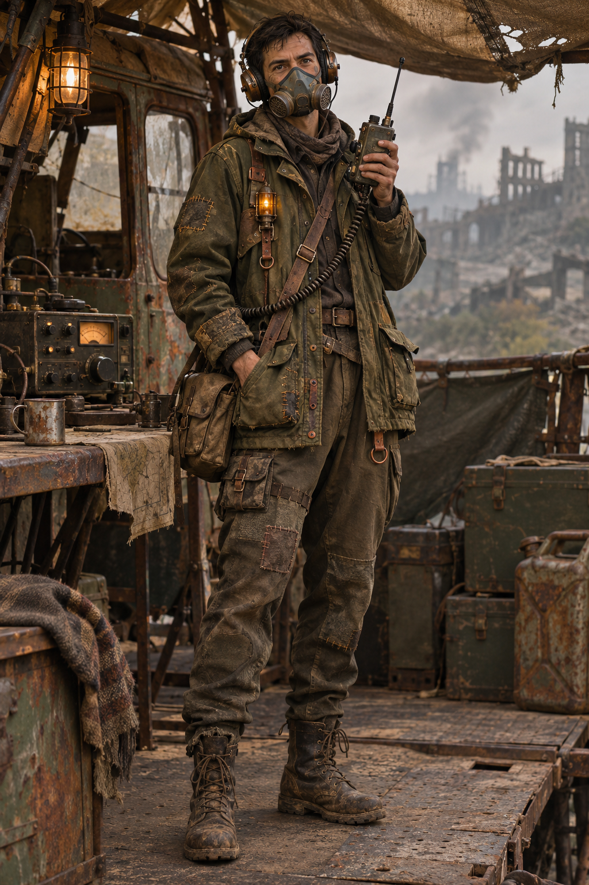
Fio
Fio mantém os Hellsings ligados quando as comunicações falham. O respirador protege seus pulmões sensíveis da poeira e trabalha junto do rádio analógico que carrega.

Poço
Poço conhece cisternas, bombas e pontos de coleta. O trabalho exige paciência: encontrar água não basta; é preciso verificar, tratar e guardar o recurso com cuidado.

Viga
Viga avalia estruturas, reforça entradas e transforma construções instáveis em abrigos mais seguros. A máscara de solda protege o rosto marcado por queimaduras e pode ser levantada na base.

Lastro
Lastro mantém o comboio em movimento e recupera veículos presos ou danificados. O capacete adaptado filtra poeira; a cicatriz na mandíbula ficou de um acidente de estrada.
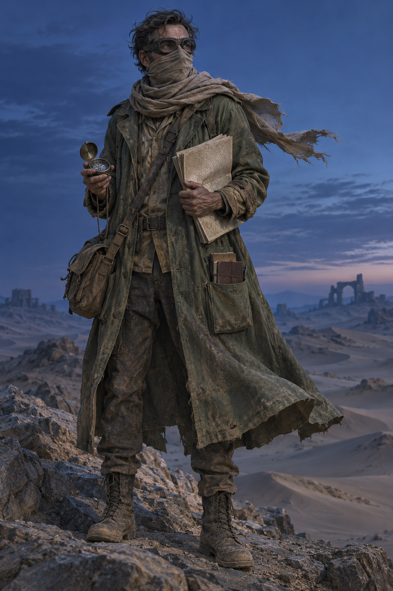
Norte
Norte orienta a equipe quando mapas, rádios e instrumentos deixam de funcionar. Lê o terreno, o vento e as estrelas, e prefere confirmar uma passagem com os próprios passos.

Corda
Corda trabalha em telhados, andares altos e estruturas comprometidas. Seu arnês gasto e as luvas reforçadas foram adaptados para resgates em lugares onde uma escada não alcança.
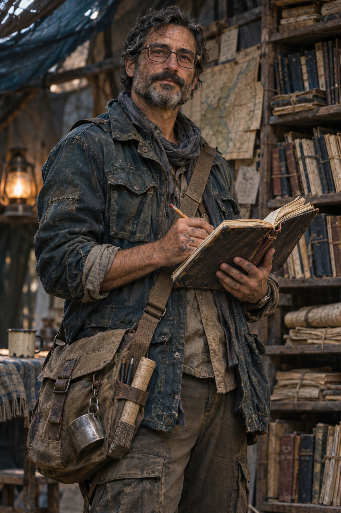
Cronista
Cronista registra nomes, trajetos e relatos que poderiam desaparecer. O caderno gasto e os óculos remendados fazem parte de um arquivo escrito à mão.
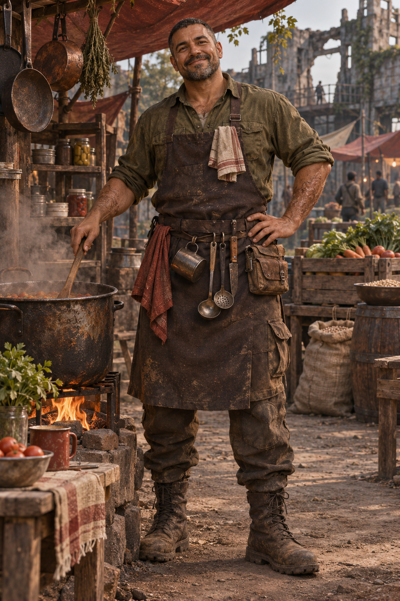
Caldeira
Caldeira organiza refeições, preserva ingredientes e calcula como fazer as provisões durarem. As marcas de queimadura nos antebraços contam o tempo passado perto de fogões improvisados.

Farol
Farol mantém geradores e circuitos essenciais funcionando. A máscara integral com símbolo de farol reúne proteção respiratória e uma marca que o grupo reconhece à distância.

Semente
Semente cuida dos pequenos cultivos e da reserva de sementes. Sua máscara integral traz um broto pintado: um lembrete de que a sobrevivência também depende do que pode voltar a crescer.
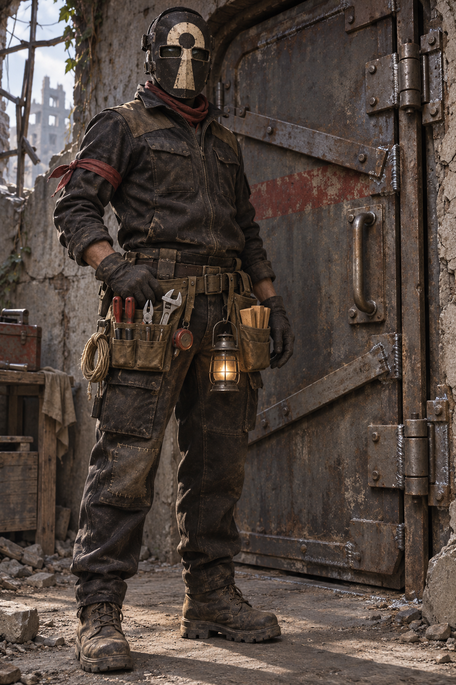
Chave
Chave cuida de fechaduras, travas e acessos mecânicos. A máscara integral tem um emblema de fechadura e acompanha sua função de manter os abrigos protegidos sem bloquear rotas de saída.

Mastim
Mastim trabalha com cães de busca e resgate. A máscara integral leva um emblema canino e protege o rosto em ambientes de poeira, enquanto a parceria com os animais é construída com treino e cuidado.
Nenhum perfil encontrado. Ajuste a busca ou escolha outro filtro.